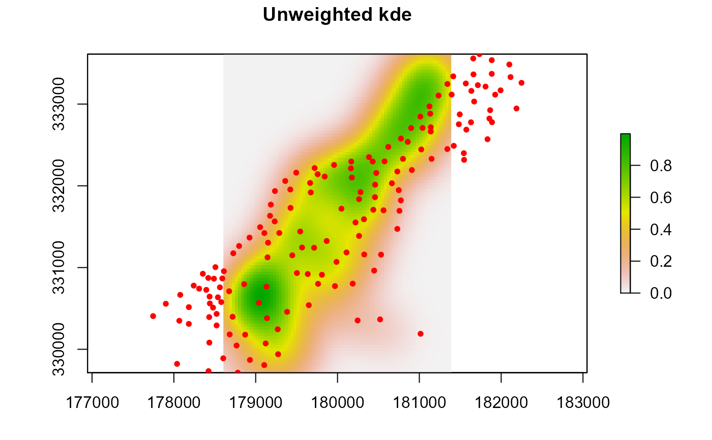
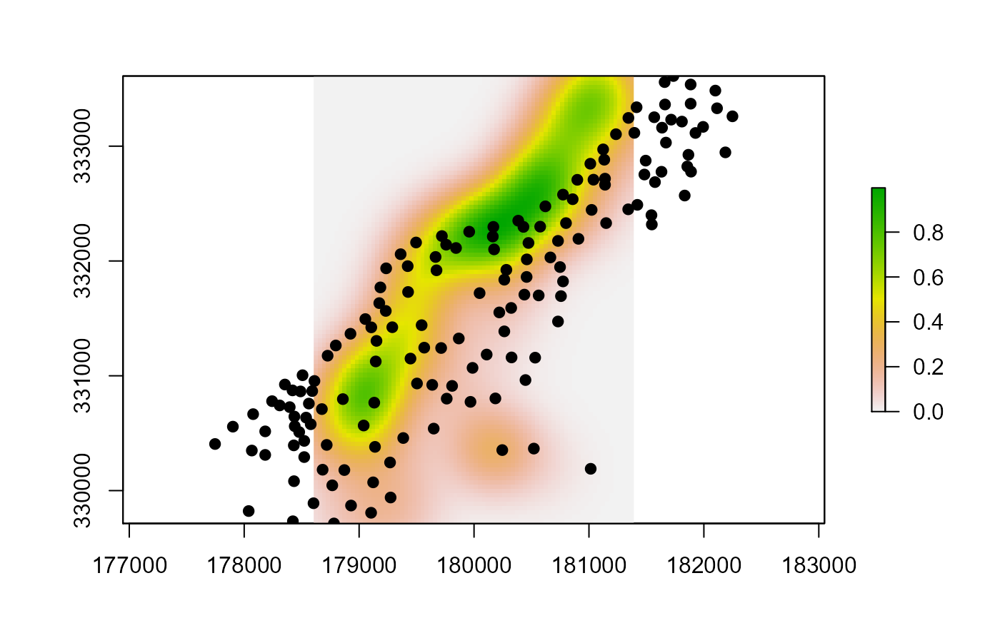
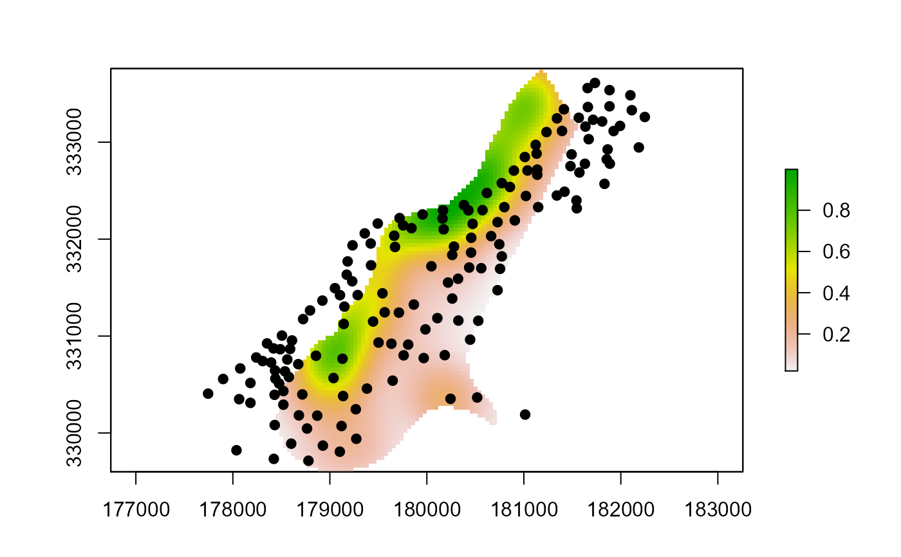

A weighted or unweighted Gaussian Kernel Density estimate for spatial data
sp.kde( x, y = NULL, bw = NULL, newdata = NULL, nr = NULL, nc = NULL, standardize = FALSE, scale.factor = NULL, mask = TRUE )
| x | sp SpatialPointsDataFrame object |
|---|---|
| y | Optional values, associated with x coordinates, to be used as weights |
| bw | Distance bandwidth of Gaussian Kernel, must be units of projection |
| newdata | A Rasterlayer, any sp class object or c[xmin,xmax,ymin,ymax] vector to estimate the kde extent |
| nr | Number of rows used for creating grid. If not defined a value based on extent or existing raster will be used |
| nc | Number of columns used for creating grid. If not defined a value based on extent or existing raster will be used |
| standardize | Standardize results to 0-1 (FALSE/TRUE) |
| scale.factor | Optional numeric scaling factor for the KDE (eg., 10000), to account for small estimate values |
| mask | (TRUE/FALSE) mask resulting raster if newdata is provided |
Raster class object containing kernel density estimate
Jeffrey S. Evans <jeffrey_evans@tnc.org>
# \donttest{ library(sp) library(raster) data(meuse) coordinates(meuse) <- ~x+y # Unweighted KDE (spatial locations only) pt.kde <- sp.kde(x = meuse, bw = 1000, standardize = TRUE, nr=104, nc=78, scale.factor = 10000 )#>#> #>#### Using existing raster(s) to define grid #### # Weighted KDE using cadmium and extent with row & col to define grid e <- c(178605, 181390, 329714, 333611) cadmium.kde <- sp.kde(x = meuse, y = meuse$cadmium, bw = 1000, nr = 104, nc = 78, newdata = e, standardize = TRUE, scale.factor = 10000 )#> #># Weighted KDE using cadmium and raster object to define grid r <- raster::raster(raster::extent(c(178605, 181390, 329714, 333611)), nrow=104, ncol=78) r[] <- rep(1,ncell(r)) cadmium.kde <- sp.kde(x = meuse, y = meuse$cadmium, bw = 1000, newdata = r, standardize = TRUE, scale.factor = 10000 )#>#> #># Weighted KDE using cadmium and SpatialPixelsDataFrame object to define grid data(meuse.grid) coordinates(meuse.grid) = ~x+y proj4string(meuse.grid) <- CRS("+init=epsg:28992")#> Warning: Discarded datum Amersfoort in Proj4 definitiongridded(meuse.grid) = TRUE cadmium.kde <- sp.kde(x = meuse, y = meuse$cadmium, bw = 1000, newdata = meuse.grid, standardize = TRUE, scale.factor = 10000 )#>#> #># }